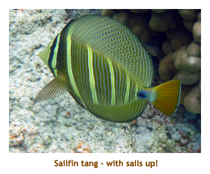
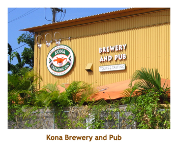

|
Home
Travel
Cruises
Past Cruises (Diaries)
Future Cruises
Rogues Galleries
Land Trips
Diaries (Land Trips)
Hawai'i
- Big Island - 04'01
Hawai'i
- Maui - 05'02
Hawai'i
- Big Island - 04'03
Hawai'i
- Kaua'i - 09'04
Hawai'i
- Big Island - 04'06
Hawai'i
- Maui - 04'06
Mainland China
- 05'07
Phoenix, Arizona
- 12'07
Greek Isles
- 05'08
Hawai'i
- Kaua'i - 09'08
Hawai'i
- Big Island - 09'09
Hawai'i
- Maui - 05'12
Hawai'i
- Big Island - 04'13
Ireland
- 08'13
Mexico
- Cancun 11'13
France/Belgium/Lux 07'15
Hawai'i
- Big Island - 05'17
England
/ Wales - 06'17
Hawai'i
- Big Island - 09'19
Photography
Cameras
Underwater
Pets
Tara
Blackie
Whitey
Muffy
Ollie
Rusty
Fluffy
Rufus&Dufus
Games
Rowing
Physics
|
|

Marjorie had ambitiously booked us for a 37 night asian cruise for April, but then
we realized that 37 days was too long, and Marjorie's work schedule interferred as
well. So we ended up cancelling the cruise. As a consolation (and a good one at that!)
we booked a one week Kona vacation through WestJet Vacations.
We got a good price at the Sheraton Kona Resort, where we had stayed in 2001 when
it was known as the Kona Surf Hotel. Our rental car was a Chevy Cruze, and was only
$215 for the week.
It was strange not having the kids with us after doing 6 previous trips with them. Just
the two of us this time. We really lucked out with the weather and the snorkeling conditions.
It was perfect!
Because this was a snorkeling trip and we didn't do too much touring around the island,
most of our pictures are fish pictures. If you like fish you're in luck. Otherwise I hope the
few scenic pictures are sufficient!
Day 1 (Apr 16) - Flight to Kona
Our flight (WestJet) was a mid afternoon flight so we did not have to rush to the
airport. We left the house around 11:30 AM and parked at the airport. Our flight took
us to Vancouver and then on to Kona. We had time in Vancouver to pick up some
sushi for lunch. We arrived in Kona about 8:30 PM (after dark) which was 12:30 AM
Calgary time, so we were kind of tired. We grabbed our rental car (from Budget)
and then headed down the highway to Keauhou Bay to check into our hotel. It
was nice that we knew where the hotel was and we found it no problem even
in the dark. We did a quick tour around the hotel grounds and I noticed that the
salt water pool had been filled in and grassed over. And, there was a new
fresh water pool that spanned the inner atrium and the area between the
hotel and the ocean. We were pretty bagged by then so went straight to bed.
Day 2 (Apr 17) - A shopping day in Kona
Today was cloudy for most of the day, but 28 C. It was a most unusual day for us, too,
as we did not go snorkeling. We spent the morning shopping for supplies for the week -
groceries, drinks, cooler bag, etc. We also drove all around Kona refreshing our memory
as to where stuff was. We managed to do Wal-Mart, Target, KTA (groceries), Safeway,
Long's Drugs and a nearby farmer's market. At the market we bought a couple of huge
avocados that required "3 or 4" days to ripen. They never did!
But we did get our favourite Punalu'u guava and taro
sweet buns and Hawaiian Sun fruit drinks, as well as milk, cereal, bread, etc.
And, Marjorie stocked up on Mac nuts. On the way back to the hotel I toured Marjorie
through the Kona Coast Resort complex where I had stayed with the kids in 2009. We
went to Teshima's (in Kealakekua) for lunch. I asked our waiter if Mrs. Teshima was
still around and yes, she is fine and turns 106 in June! We spent the remainder of the
afternoon back at the hotel, relaxing by the pool. We had sandwiches in our room for dinner.
Afterwards we spent some time at the manta ray deck and listened to a girl who was
lecturing about the manta rays. Early to bed!
Day 3 (Apr 18) - Guava buns and the Black Sand Beach
Today we did our first snorkel at Kahalu'u Beach Park. We were up very early, had
breakfast in our room and were at the beach by 7:30. KBP has been a favorite snorkel
site for us since we discovered it in 2001. There is a breakwater across the mouth of the bay
so the waters are always calm and the visibility is very good. Also, being a very shallow
bay (3 to 6 feet in depth), the fish are very close. Great for photographs. As always, we really
enjoyed our snorkel. After popping back to our hotel and removing the salt, we packed our
drinks and headed off to the Punalu'u Bakery on the south tip of the island
(in the village of Na'alehu). This is where they
bake our favourite guava and taro sweetbread rolls. Marjorie hadn't
been there before. It took us about 1.5 hours to drive to the bakery.
We had lunch at the bakery. Then we drove a bit further to the Black Sand
Beach where we saw 12 or so turtles sunning themselves on the rocks. On the way back we
picked up some papayas at an "honour system" roadside fruit stand. No one there - just put
your money in a box and take what you want. We were back by 4:00 and Marjorie headed
off to get a haircut while I read. For dinner we went to the nearby Keauhou Shopping Center
and ate at the L&L Hawaiian BBQ fast food place. The food wasn't the best. We returned
to the hotel to relax at the manta ray deck. We never did see any rays though.
Day 4 (Apr 19) - Sam Choy's is back
Today was another mixed cloud / sun day reaching 32 C.We started the day with breakfast
in our room. Marjorie wanted to buy
a bathing suit, so we tried the stores but struck out. Along the way we stopped at Costco for
some cheap gas. The price there was $0.25 less per gallon than elsewhere ($4.25 vs $4.50).
Good deal! We returned to the hotel for our snorkel gear and headed to KBP (about a 5 minute
drive). We had another wonderful snorkel. There was quite a swell in the ocean which caused
some currents in the bay. After communing with the fish we cleaned up and then went to the
new Sam Choy's in the remodeled Wendy's building at the Keauhou Shopping Center. We
had done Sam's in 2001 at the Costco park, but it had closed for several years and had just
reopened in it's new location. Following lunch we continued with the bathing suit search at
Target in Kona. Then it was across the street to the Dairy Queen for an afternoon treat. Back
at the hotel it was our typical late afternoon ritual of reading by the pool, dinner in our room, and (after
dark) watching the waves roll in from the manta ray deck. There were always a couple of
snorkel boats and kayaks with bright lights parked in the bay to watch the rays from
close up.
Day 5 (Apr 20) - Snorkelling at Pauoa Bay
We woke up this morning to another warm and sunny day. Marjorie was interested
in checking out the Fairmont Orchid Hotel north of Kona. She had tried to get reasonable
TA rates there for a three night stay, but even with the 50% discount, it was still $200 per
night. It was about an hour drive from our hotel and up the Kohala coast. The bare lava
rock with the white stone writings always amazes me. What a dry area! We parked at the
Holoholokai Beach parking lot, a short walk from the Fairmont complex. This is where
Mike, Stacy and I got locked in during a tsunami watch on a previous trip. We settled
on beach lounge chairs and then did a snorkel of the small Pauoa Bay. The water
was murky (as usual!) but we did see 4 turtles. After our snorkel we showered off and
then wandered through the Fairmont grounds and buildings. It really is a beautiful
place. We then continued our drive notrh, then east to the village of Waimea (Kamuela).
We had lunch at Huli Sue's (I had short ribs). Then we drove the Belt Road back to Kona,
cutting across to Costco for a very, berry sundae. Man, those are huge.We arrived back
at our hotel mid-afternoon, so did our read by the pool thing. We had Punalu'u buns
for dinner and then spent the evening wandering around the grounds of the hotel.
Day 6 (Apr 21) - A walk around downtown Kona
Well, another day in paradise! Right after breakfast we snorkeled at our favourite KBP
beach. There were loads of fish there and lots of varieties. The water has been quite cold
so I wore my shortie each time we snorkeled. Afterwards we returned to the hotel for a while.
Just before lunch time we drove in to Kona and parked so we could walk around the town.
We looked for Splashers Grill (again, we'd looked on our first day too but couldn't find it)
and found it in a new location on Palani Street. It had
moved about a block away from Ali'i Drive to the second floor of a 2
story building, with a wrap around veranda. It was much nicer than the previous site, very roomy
and all shaded. Marjorie had an avocado and gruyere cheese burger (with gigantic onion
rings) and I had a pineapple teryaki burger. Very good! As we wandered back along the
main street, a huge market had been erected with booths jammed in along the street for at
least 1/2 mile or so. The booths were not there when we had first arrived!They must have
been set up in the space of an hour. On the way back to the hotel we stopped at Target
and Wal-Mart so that Marjorie could take a third stab at buying a bathing suit. She actually
found something she liked so I told her she should buy two of them (which she did). Then
we returned to the hotel. We sat around the pool and read for a couple of hours and
then had bun-wiches in our room. Once again we enjoyed the soft evening at the
manta ray deck.
Day 7 (Apr 22) - Hilo Hattie's and Tropical Dreams
Today we had breakfast in the room and then headed out to do our usual morning
snorkel at Kahalu'u Beac Park. Once again there were lots of fish and it was
very sunny. We always seem to see at least one turtle there too. Afterwards
we sat on the beach and enjoyed the warm sun. Then it was back to the hotel
to change. I am glad that our hotel was so convenient to our favorite snorkel
spot! We had enjoyed Sam Choy's so much for lunch the other day we went to
Sam's again for lunch today. It was excellent! Surprisingly Marjorie had the
"Loco Moco" (burger pattie and fried egg on mashed potatoes, smothered in
gravy). Finally it was my turn to shop so we visited Hilo Hatties in Kona
for a couple of t-shirts. Then we drove south to Island Antiques (in Kealakekua)
and had some Tropical Dreams ice cream. Delicious! We were back to the hotel
by 4:00 for our usual read beside the pool. We finished up most of our groceries
for dinner. The weeklyhotel luau was on in the evening so we walked
through the event grounds.
Lots of people were enjoying themselves on the beautiful evening. Sadly, this
was our last evening at the hotel.
Day 8 (Apr 23) - Final day in Hawai'i

Today was our final day in Hawai'i. It had been a wonderful vacation. Our
flight was at 9:45 PM, so we had the whole day to fill in with activities.
Unfortunately, snorkeling wasn't an option. I find the water too cold to swim
without my shortie (wetsuit) and I could not dry the suit in time for our
flight home. So, we had breakfast and then just relaxed around the hotel.
Our check-out time wasn't until 12:00 noon. We packed our bags, with a 4-pack
of Maui Brewing Coconut Porter for the kids placed gingerly in one of our
checked bags.I wasn't sure the cans would make it home without exploding.
We left about 11:45 and headed into Kona to visit the Kona Brewing Company's
restaurant / pub. I had done the brewery tour in 2009 with the kids, so we
just went directly to the restaurant. We spent the afternoon shopping and
dropped in on the local Humane Society to buy a t-shirt. We ended up at Wendy's
for dinner. We made a stop at Costco on the way to the airport to fill up
with cheap gas. Our overnight flight out was ontime and we arrived in Vancouver about
6:30 AM. We claimed our bags (no exploded cans) cleared customs and boarded
for Calgary. Would the beer cans survive another flight? We made it to Calgary
by 11:30 and our luggage arrived dry - no exploded beer! We located our vehicle
in the long term parking and headed home. The cats were happy to see us
back home again.
|